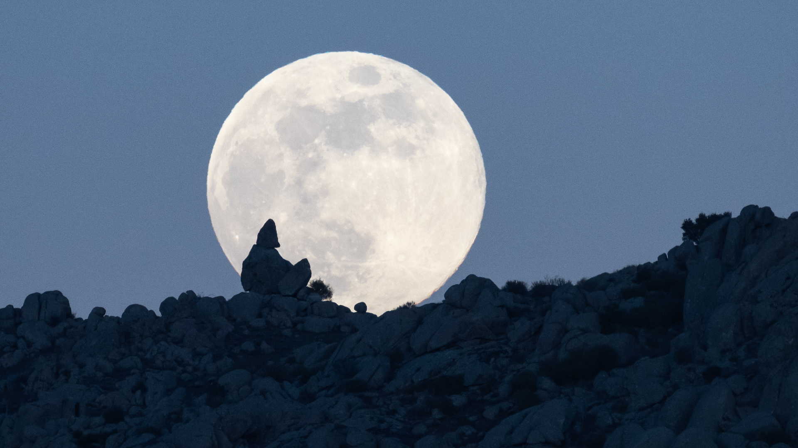

The Wolf Moon — Astronomy, Folklore, and Viewing Guide
The "Wolf Moon" is the traditional name for the full moon that occurs in January. This long read explains the astronomy behind full moons, the cultural roots of the Wolf Moon name, photography tips, and why this lunar phase has inspired myths for centuries.
What is a full moon (simple astronomy)
A full moon happens when Earth lies between the Sun and the Moon, fully illuminating the lunar disk. The Wolf Moon is simply the January full moon — its appearance varies year to year based on orbital mechanics.
Origins of the "Wolf Moon" name
The name comes from early Anglo-Saxon and Native American traditions referencing wolf howls in winter months when food was scarce. Various cultures gave January’s full moon different names, but "Wolf Moon" stuck in popular usage.
Why Wolf Moon photography is special
The low winter angle and atmospheric conditions can make lunar photography both challenging and rewarding. Use longer focal lengths and shoot as the moon rises for dramatic foreground silhouettes.
Best times and tips to view
- Check local moonrise/moonset times.
- Scout a foreground (trees, buildings) for scale.
- Use manual exposure and a tripod for clear shots.
Science and culture — why the full moon still matters
Beyond folklore, full moons have historically structured calendars and communal rituals. Today, they are a reminder of our connection to natural cycles—use them to plan photography outings, night hikes, or simply a quiet moment of observation.
Final notes
The Wolf Moon is accessible to anyone — you don’t need a telescope to appreciate its beauty. With simple planning, you can make the most of this lunar event.